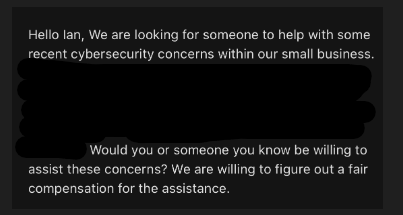
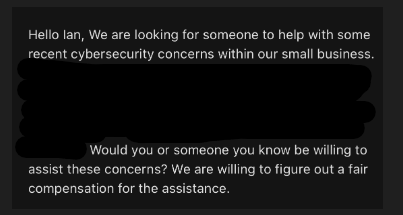

Recently, I received an intriguing email, which initially sparked skepticism—was I being phished?

This led me to wonder how my email was discovered and whether the concern was genuine. I composed a brief, yet inquisitive reply.
A few hours later, I received a follow-up email, enriching the narrative with a company name and more context.
The Situation
This shift turned my focus towards evaluating if my skills aligned with the presented issue and how I might address it.
It quickly became evident that the challenge was less technical and more about effective communication.
The company was looking for someone with a security-focused mindset and a risk-aware perspective to alleviate their worries- and quickly.
Despite not having decades of experience, I felt sufficiently confident in my abilities to proceed to the next steps.
Putting on my puffer-vest: The Approach to becoming a Consultant
Engaging with the client via video call, I realized the importance of presenting a professional demeanor.
Despite the nagging feeling of impostor syndrome due to my lack of formal consulting experience,
I recognized the value of my role as the "tech guy" within my family and my informal advisory position in friends' early-stage startups.
I've been "consulting" informally, but it still is experience in approaching a problem, and applying a specific perspective to arrive at a solution.
After consulting a couple people who do this sort of thing much more frequently about logistical and legal aspects,
I outlined the engagement terms in a concise two-page statement of work- relying a lot on the type of document a Pen-tester would use in their engagements.
While its legal bindingness was uncertain, it ethically reassured me of my commitment and engagement with the customer.
Outcome & Reflections
Well unfortunately, this isn't the ending you're expecting. But I woudl say it definitely is a happy one.
The client preferred on-site assistance, which was logistically challenging due to my location across the country.
However, I was able to connect them with a local colleague that I felt would do just as good of a job, if not better. I completely understand their reasoning and from what
I've heard after the fact, it went really well. That being said, I still feel like this was a win in my book.
I grew my understanding and perspective on what cybersecurity consulting at the small and medium business level could look like.
Although I know opportunities of people randomly emailing my old college email account won't come frequently enough for me to start a business and quit my day job, it's definitely piqued my interest in consulting
to some extent. I made a new connection both professionally and strengthened the bond with the peer that ultimately completed the work.
Key Insights:
As someone who values learning from experiences, here are my primary takeaways:
- Cybersecurity Literacy: There's a pronounced need for cybersecurity literacy among small and medium-sized businesses.
- Random EmailsSometimes it is a phishing email, but sometimes it's a hastily written email by a operations employee who's looking for reassurance and peace during a stressful challenge.
- Our Potential and Responsibility to do good:We have so much potential to help others in Cybersecurity, and I love that about our field. Let's keep that in mind and make the world a better, safer place for all.
If you would like to hire me as a cybersecurity consultant, I would be more than happy to jump on a short 30 minute video call to discuss!
Contact me at: contact[at]ohcoz[dot]com
Dipping my toe into Cyber Consulting
Last Updated: 2024 February 19th Twitter Back to my Main pageRecently, I received an intriguing email, which initially sparked skepticism—was I being phished?
This led me to wonder how my email was discovered and whether the concern was genuine. I composed a brief, yet inquisitive reply. A few hours later, I received a follow-up email, enriching the narrative with a company name and more context.
The Situation
This shift turned my focus towards evaluating if my skills aligned with the presented issue and how I might address it. It quickly became evident that the challenge was less technical and more about effective communication. The company was looking for someone with a security-focused mindset and a risk-aware perspective to alleviate their worries- and quickly. Despite not having decades of experience, I felt sufficiently confident in my abilities to proceed to the next steps.
Putting on my puffer-vest: The Approach to becoming a Consultant
Engaging with the client via video call, I realized the importance of presenting a professional demeanor. Despite the nagging feeling of impostor syndrome due to my lack of formal consulting experience, I recognized the value of my role as the "tech guy" within my family and my informal advisory position in friends' early-stage startups. I've been "consulting" informally, but it still is experience in approaching a problem, and applying a specific perspective to arrive at a solution. After consulting a couple people who do this sort of thing much more frequently about logistical and legal aspects, I outlined the engagement terms in a concise two-page statement of work- relying a lot on the type of document a Pen-tester would use in their engagements. While its legal bindingness was uncertain, it ethically reassured me of my commitment and engagement with the customer.
Outcome & Reflections
Well unfortunately, this isn't the ending you're expecting. But I woudl say it definitely is a happy one. The client preferred on-site assistance, which was logistically challenging due to my location across the country. However, I was able to connect them with a local colleague that I felt would do just as good of a job, if not better. I completely understand their reasoning and from what I've heard after the fact, it went really well. That being said, I still feel like this was a win in my book. I grew my understanding and perspective on what cybersecurity consulting at the small and medium business level could look like. Although I know opportunities of people randomly emailing my old college email account won't come frequently enough for me to start a business and quit my day job, it's definitely piqued my interest in consulting to some extent. I made a new connection both professionally and strengthened the bond with the peer that ultimately completed the work.
Key Insights:
As someone who values learning from experiences, here are my primary takeaways:
If you would like to hire me as a cybersecurity consultant, I would be more than happy to jump on a short 30 minute video call to discuss! Contact me at: contact[at]ohcoz[dot]com